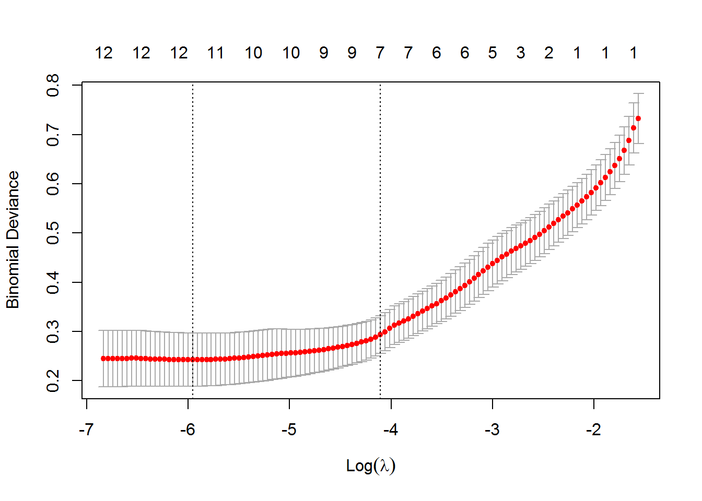
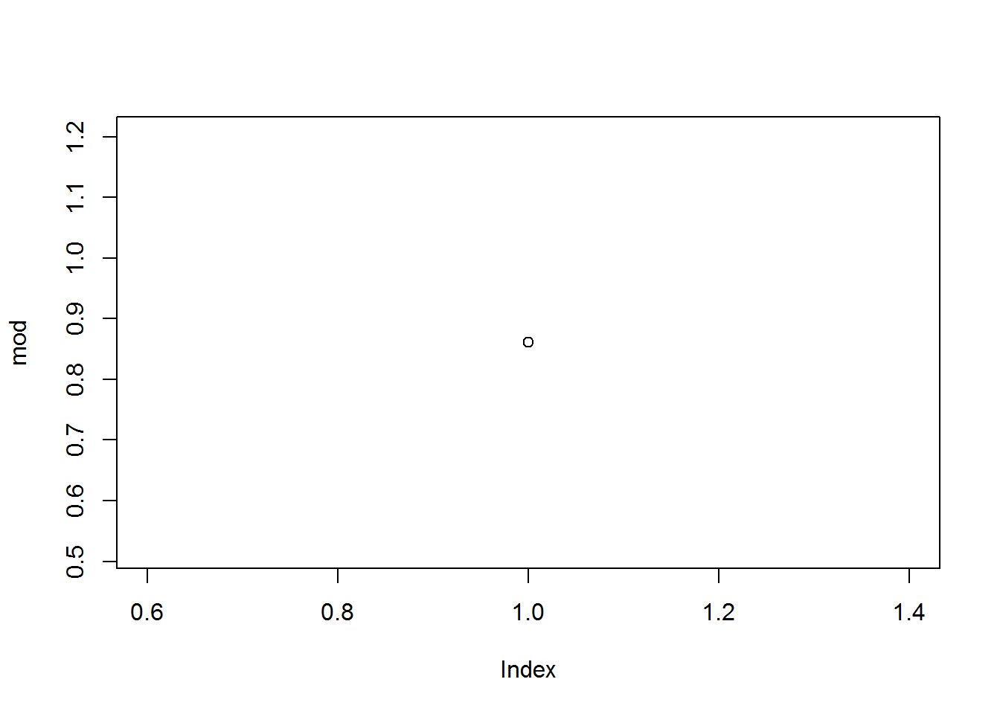
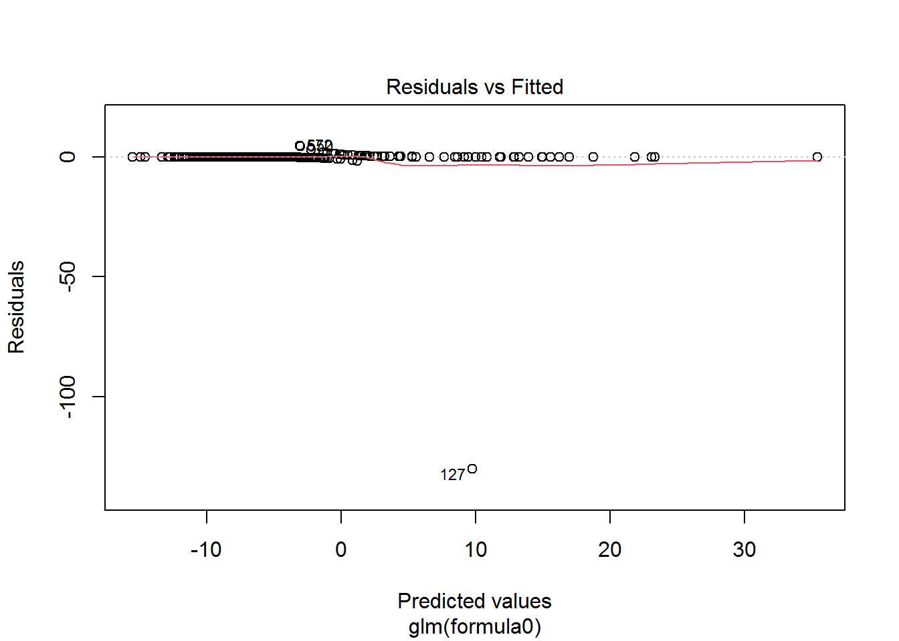
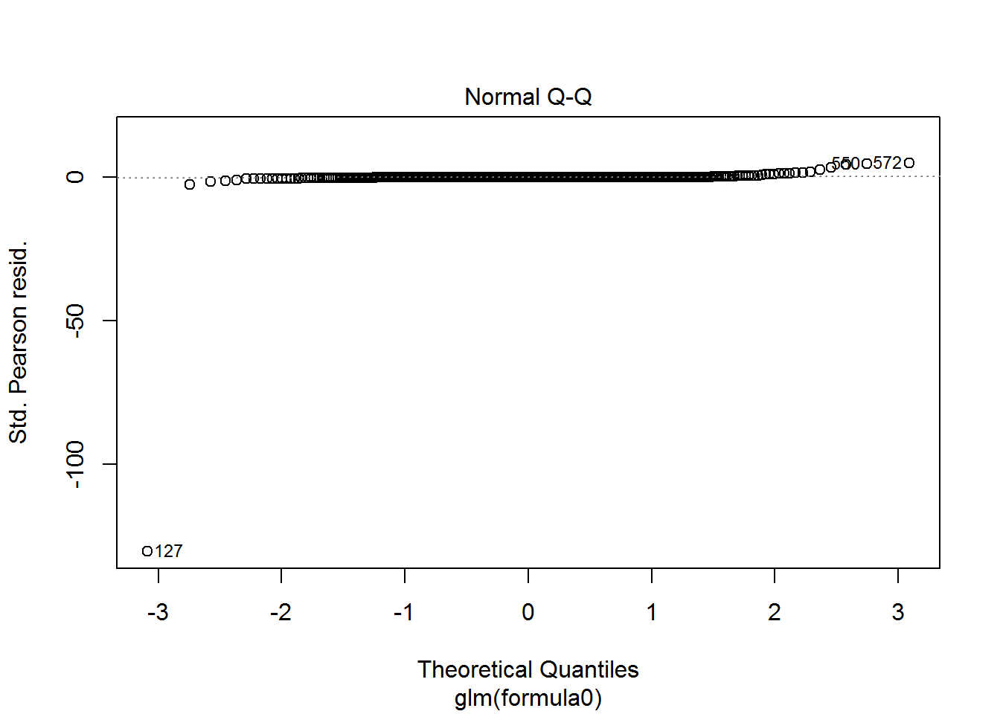
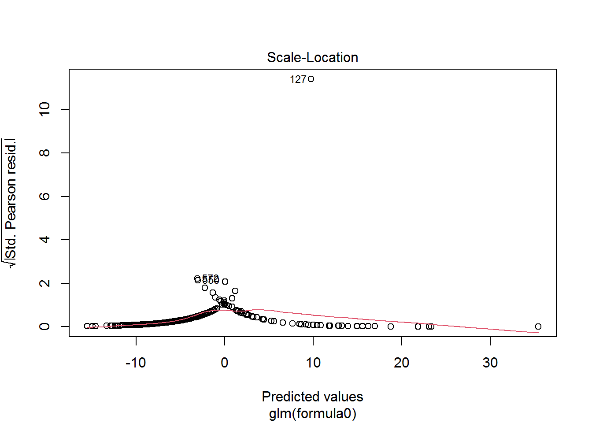
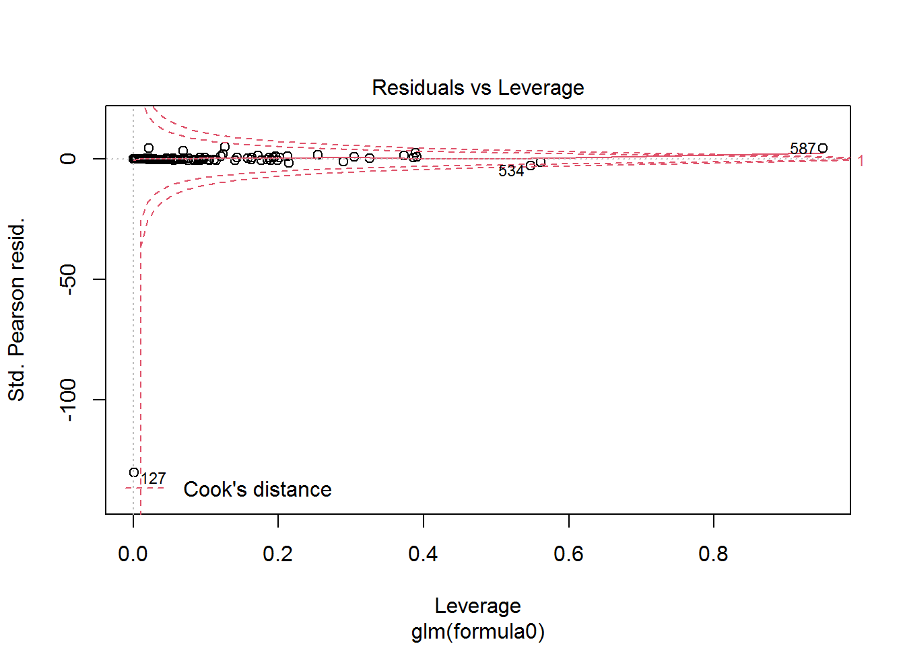

4 REGULARIZED LOGISTIC REGRESSION
4.1 Data Partition
data<-read.csv("data/CleanedData.csv",header = T,colClasses=c("NULL", rep(NA, 13)))
set.seed(125)
V = 5
n = NROW(data); n0 = sum(data$Category==0); n1 = n-n0;
id.fold = 1:n
id.fold[data$Category==0] <- sample(x=1:V, size=n0, replace=TRUE)
id.fold[data$Category==1] <- sample(x=1:V, size=n1, replace=TRUE)
for (v in 1:V) {
train.v <- data[id.fold!=v, ]; test.v <- data[id.fold==v, ]
}
dim(train.v)## [1] 492 13dim(test.v)## [1] 123 134.2 5-Fold Cross Validation - Logistic Regression
set.seed(666)
V <- 5
n <- NROW(data); n0 <- sum(data$Category==0); n1 <- n-n0;
missclass.rate = c()
err_vec1=c()
for (v in 1:V) {
err_vec1=c(err_vec1, v)
missclass.rate=c(missclass.rate, v)
}
id.fold <- 1:n
id.fold[data$Category==0] <- sample(x=1:V, size=n0, replace=TRUE)
id.fold[data$Category==1] <- sample(x=1:V, size=n1, replace=TRUE)
#Model, Error Rate, Prediction, AUC
for (v in 1:V) {
train.v <- data[id.fold!=v, ]; test.v <- data[id.fold==v, ];
formula0 = Category~.
X = model.matrix (as.formula(formula0), data = train.v)
y = factor(train.v$Category)
fit.lasso = glmnet(x=X, y=y, family="binomial", alpha=1,
lambda.min = 1e-4, nlambda = 100, standardize=T, thresh =
1e-07, maxit=1000)
CV = cv.glmnet(x=X, y=y, family="binomial", alpha = 1,
lambda.min = 1e-4, nlambda = 200, standardize = T,
thresh = 1e-07, maxit=1000)
best.lambda = CV$lambda.1se; #best.lambda
fit.best = glmnet(x=X, y=y, family="binomial", alpha = 1,
lambda=best.lambda, standardize = T,
thresh = 1e-07, maxit=1000)
formula0 = Category ~.
fit.final = glm(formula0, family = "binomial", data = train.v)
#Observed response
yobs = test.v$Category
X.test = test.v[, -1]
pred.glm = predict(fit.final, newdata = X.test, type="response")
#AUC
mod = roc.area(yobs, pred.glm)$A
err_vec1[v] = mod
print(paste("AUC for fold", v, ":", err_vec1[v]))
pred.rate = ifelse(pred.glm > 0.5, 1, 0)
miss.rate <- mean(yobs != pred.rate)
missclass.rate[v] = miss.rate
print(paste("Missclassification rate for fold", v,
":",missclass.rate[v]))
}## [1] "AUC for fold 1 : 0.987612612612613"
## [1] "Missclassification rate for fold 1 : 0.0458015267175573"
## [1] "AUC for fold 2 : 0.986607142857143"
## [1] "Missclassification rate for fold 2 : 0.0403225806451613"
## [1] "AUC for fold 3 : 0.964401294498382"
## [1] "Missclassification rate for fold 3 : 0.0347826086956522"
## [1] "AUC for fold 4 : 0.995535714285714"
## [1] "Missclassification rate for fold 4 : 0.0234375"
## [1] "AUC for fold 5 : 0.86078431372549"
## [1] "Missclassification rate for fold 5 : 0.0427350427350427"summary(fit.final)##
## Call:
## glm(formula = formula0, family = "binomial", data = train.v)
##
## Deviance Residuals:
## Min 1Q Median 3Q Max
## -4.4133 -0.1320 -0.0505 -0.0133 2.4931
##
## Coefficients:
## Estimate Std. Error z value Pr(>|z|)
## (Intercept) -15.061586 5.390439 -2.794 0.005204 **
## Age 0.016174 0.028955 0.559 0.576433
## Sexm -1.008360 0.762910 -1.322 0.186258
## ALB -0.194500 0.087471 -2.224 0.026176 *
## ALP -0.108415 0.024431 -4.438 9.10e-06 ***
## ALT -0.019002 0.010499 -1.810 0.070319 .
## AST 0.079773 0.020999 3.799 0.000145 ***
## BIL 0.086325 0.033615 2.568 0.010226 *
## CHE 0.173440 0.169450 1.024 0.306048
## CHOL -1.302632 0.380756 -3.421 0.000624 ***
## CREA 0.029690 0.007738 3.837 0.000125 ***
## GGT 0.033794 0.007784 4.342 1.41e-05 ***
## PROT 0.334879 0.091808 3.648 0.000265 ***
## ---
## Signif. codes: 0 '***' 0.001 '**' 0.01 '*' 0.05 '.' 0.1 ' ' 1
##
## (Dispersion parameter for binomial family taken to be 1)
##
## Null deviance: 366.413 on 497 degrees of freedom
## Residual deviance: 81.187 on 485 degrees of freedom
## AIC: 107.19
##
## Number of Fisher Scoring iterations: 8plot(CV)
plot(mod)
Average.AUC.logis<-print(paste("Average of AUC:", mean(err_vec1)))## [1] "Average of AUC: 0.958988215595868"Average.miss.logis<-print(paste("Average of Miss:", mean(missclass.rate)))## [1] "Average of Miss: 0.0374158517586827"AUC.LOGIS<-mean(err_vec1)
miss.rate.LOGIS<-mean(missclass.rate)4.3 Fitting the Best Model
plot(fit.final)
#fit.best$beta
final.fit<-glm(train.v$Category~ALP+ALT+AST+BIL+CHOL+CREA+GGT+PROT, family = (link = "binomial"), data = train.v)Cross validation is used to select the best tuning parameter for the logistic regression. Obtain best tuning parameters - also, unimportant coefficients are shrunk to 0. Fit.final output the remaining significant variables.
Average of AUC and Missclassification Rate;
Note 2
Logistic AUC: 0.98, MisClassification Rate: 0.027↩︎